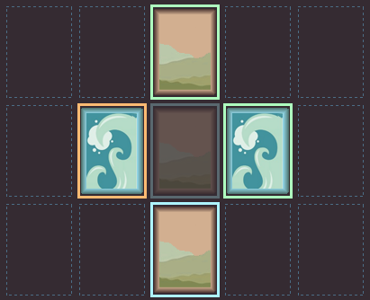
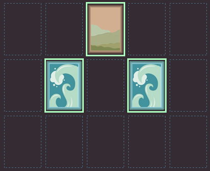

An abstract strategy card game based on the antiquated notion that "Nature abhors a vacuum."
Página de inicio
Horror Vacui es un juego simple de elementos basado en la noción arcaica de que la naturaleza rechaza el vacío.
Los jugadores representan dos elementos básicos de la naturaleza, el agua y la tierra.
Ambos jugadores toman turnos para colocar su carta de elemento sobre el "vacío".
Aqui vemos una carta de elemento tierra sobre el vacío.
Las cartas cuentan con una propiedad de temperatura. Este está determinado por su contorno. Pueden ser:
- Frío ,
- Neutral o
- Caliente .
Cada carta colocada sobre el tablero tiene un efecto directo sobre la carta superior, inferior y las que se encuentran a su izquierda y derecha.
Debemos considerar estas reglas cuando colocamos cartas.
Una carta fría en contacto. con otra carta fría resultará en ambas congelandose, ergo destruyendose y ambas eliminadas del juego.
Una carta caliente en contacto. con otra carta caliente dará lugar a ambas cartas incinerandose siendo removidas del juego.
Una carta fría en contacto. con otra carta caliente iniciará un intercambio de temperaturas, y al igual que en la naturaleza, ambas cartas llegarán a una temperatura neutral
Y para terminar, cualquier carta neutral no tendrá efecto alguno sobre las cartas de su alrededor.
Aqui puedes ver una jugada de ejemplo dónde se aplican todas las reglas:
La carta superior es neutral al igual que la carta derecha. Éstas permanecerán igual. La carta inferior es fría por lo cual será congelada y desaparecerá al igual que la central. Sin embargo el frío de la carta central será transferido a la carta derecha caliente y ésta se volverá neutral . 
Dirija cualquier duda adicional sobre las reglas a afiol@necrofant.asia y gracias por probar el juego.
Concepto original del juego por Sinman, desarollado y ilustrado por @echan42.